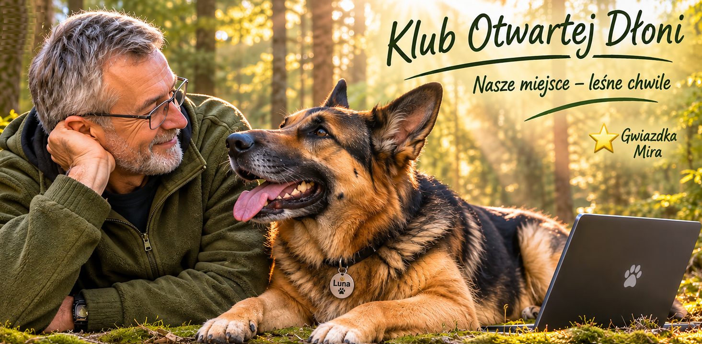

Nasze miejsce – Leśne chwile
Nie każde miejsce trzeba opisywać adresem.
Czasem wystarczy powiedzieć, że jest trochę lasu, trochę ciszy i przestrzeń, w której można po prostu być.
To właśnie tutaj najłatwiej zwolnić. Posłuchać, co dzieje się dookoła. Popatrzeć na drzewa, niebo i Lunę, która zwykle ma własny pomysł na to, co w danej chwili jest najważniejsze.
Są tu spacery, kopanie tuneli, zabawa piłką i chwile, kiedy właściwie nic szczególnego się nie dzieje.
I może właśnie takie chwile są najcenniejsze.
Nie chcemy robić z tego miejsca katalogu zdjęć ani opowiadać wszystkiego słowami. Będziemy po prostu zostawiać tutaj małe ślady tego, co się wydarzyło.
Leśne chwile.
Nasze miejsce.
